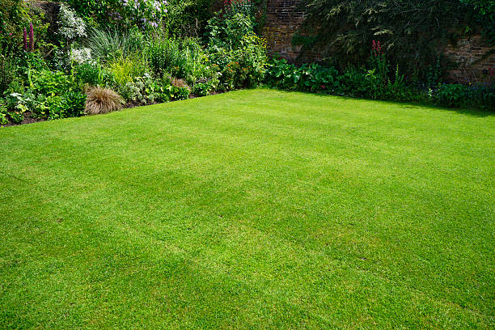

Osage City Kansas
info@smotlawncare.xyz
Osage City Kansas
info@smotlawncare.xyz

Affordable lawn care in Osage City Kansas : Comprehensive services including sod installation, disease management, and organic treatments to keep your lawn looking its best with minimal effort.
Click Here To Call Us (877) 848-1711Top-Quality Lawn Care Services in Osage City Kansas
Maintaining a lush, healthy lawn in Osage City Kansas can be challenging, but with Smot Lawn Care, you can achieve a beautiful outdoor space effortlessly. Our expert team offers comprehensive lawn care services tailored to the unique needs of your lawn, ensuring it stays green, vibrant, and weed-free year-round. From routine mowing and trimming to fertilization and aeration, we use industry-leading techniques to nurture your lawn's health and appearance.
At Smot Lawn Care, we understand that every lawn is different. Our customized care plans focus on soil type, grass variety, and seasonal conditions specific to Osage City Kansas . We use eco-friendly, high-quality products to enrich the soil, promote deep root growth, and protect your lawn from pests and diseases.
We pride ourselves on delivering reliable and affordable services that enhance the curb appeal of your property. With our experienced team handling your lawn care, you'll enjoy a lush, green lawn that boosts your home’s value. Our commitment to customer satisfaction and detailed workmanship sets us apart as the best lawn care company in Osage City Kansas .
Let Smot Lawn Care take the hassle out of lawn maintenance. Contact us today to schedule your lawn care services and experience the difference of working with Osage City Kansas 's top lawn care professionals.
Residential & commercial lawn care
Quality services at affordable prices
Immediate 24/ 7 emergency services


Maintaining a lush, green lawn in Osage City Kansas requires careful attention to watering practices. At Smot Lawn Care, we understand that proper watering is crucial for a vibrant lawn. The question, “How often should I water my lawn, and what is the best time to do it?” is commonly asked by homeowners striving for a healthy yard.
In Osage City Kansas the ideal watering schedule depends on factors such as climate, soil type, and grass variety. Generally, lawns should receive about 1 to 1.5 inches of water per week. This can be achieved through one or two deep waterings to encourage deep root growth and drought resistance. Frequent, shallow watering can lead to weak roots and increased susceptibility to pests and diseases.
The best time to water your lawn is early in the morning, ideally between 4 AM and 10 AM. Watering during this window minimizes evaporation and allows the grass to dry before evening, reducing the risk of fungal growth. Avoid watering in the late afternoon or evening, as prolonged moisture on the grass blades can foster fungal infections and other issues.
To ensure your lawn receives the right amount of water, use a rain gauge or soil moisture meter. Additionally, adjust your watering schedule based on seasonal changes and rainfall. By following these guidelines, you’ll keep your lawn in Osage City Kansas looking its best year-round. For personalized advice and professional lawn care services, contact Smot Lawn Care today.
Residential & commercial lawn care
Quality services at affordable prices
Immediate 24/ 7 emergency services
Installing new sod is an investment in your landscape, and proper care is essential for a successful establishment. Our lawn care for new sod services focuses on delivering the right nutrients, watering schedules, and maintenance required to ensure your new grass takes root and thrives. Our team has extensive experience with sod installation and can provide tailored care that suits the sod type and local climate conditions. From initial watering techniques to ongoing maintenance, we guide you through every step to achieve a lush, green lawn that enhances your property.

A beautiful lawn can sometimes face challenges from diseases, affecting its health and appearance. Our lawn disease treatment services are designed to diagnose and manage these issues effectively. With our extensive knowledge of common lawn diseases specific to Osage City Kansas we provide tailored treatments that restore your lawn to optimal health. Our emphasis on preventive care and early intervention aims to protect your investment and enhance the beauty of your landscape. Choose us for expert care that prioritizes the vitality of your lawn!

Our lawn maintenance packages offer a comprehensive range of services designed to meet the diverse needs of our clients. Whether you are looking for basic mowing or intricate care involving fertilization, weed control, and seasonal clean-up, our packages help simplify your lawn care experience. We cater our packages to fit your specific lawn requirements and budget, ensuring consistent improvements and vibrant results. Choose us for expertly crafted lawn maintenance solutions that deliver lasting beauty and health for your outdoor spaces!

Maintaining an attractive landscape for your business is crucial to creating a positive impression. Our commercial lawn care services are tailored to meet the specific needs of businesses, institutions, and organizations. We provide comprehensive landscaping and lawn maintenance solutions that include mowing, trimming, fertilization, and seasonal cleanups. Our flexible scheduling and commitment to excellence ensure that your commercial property looks its best at all times. Partnering with us means entrusting your lawn care to a passionate team dedicated to enhancing the visual appeal of your commercial spaces.
.jpg)
Give your lawn that polished look with our professional lawn edging services . A well-defined edge creates a crisp contrast between your lawn and garden beds, walkways, and driveways, enhancing the overall appearance of your landscape. Our team utilizes modern equipment to install and maintain clean and sharp edges around your lawn, ensuring neatness and helping to prevent grass intrusion into flower beds. With our expertise in lawn edging, your property will have a more structured and manicured look that shows off your attention to detail and commitment to quality.
Searching for lawn care specialists near you in Osage City Kansas ? Our dedicated team comprises experienced professionals who are passionate about enhancing the health and beauty of your lawn. We understand the challenges posed by the local climate, soil conditions, and common pest problems, allowing us to provide tailored solutions that deliver exceptional results. Our specialists are equipped with the latest resources and techniques to address your unique lawn care needs, whether it be routine maintenance, one-time treatments, or comprehensive landscaping projects. When you choose us, you can rest assured that your lawn is in the hands of experts who truly care.

Consistent care is the key to a thriving lawn. Our weekly lawn care services ensure your lawn receives the attention it needs to remain healthy and vibrant. With our dedicated team at lawn care, we offer regular mowing and maintenance services tailored to the growth pattern and seasonal needs of your lawn. Our professionals arrive on schedule, equipped with the latest tools and techniques to maintain your landscaping's beauty and health. By opting for our weekly lawn care services, you free yourself from the ongoing worry of lawn maintenance while enjoying an effortlessly pristine outdoor space.

Every lawn is unique, and our custom lawn care plans reflect that individuality. We take the time to assess your lawn’s specific needs, including its size, grass type, soil health, and local climate. Based on this evaluation, we develop a personalized care plan that includes mowing, fertilization, aeration, weed control, and pest management, ensuring your lawn receives the precise treatments it requires. Our commitment to customized solutions sets us apart, making us your best choice for effective, tailored lawn care.
Years Experience
Expert Technicians
Satisfied Clients
Compleate Projects
At Smot Lawn Care, we pride ourselves on being the premier choice for lawn care services across Osage City Kansas . Our commitment to excellence and attention to detail set us apart from the competition, ensuring that your lawn remains healthy, vibrant, and the envy of your neighborhood.
Why choose Smot Lawn Care? Our experienced team of professionals uses the latest techniques and high-quality products to deliver exceptional results. From expert lawn mowing and fertilization to effective weed and pest control, we offer a comprehensive range of services designed to meet your lawn's unique needs. Our approach is personalized, with tailored solutions that address the specific requirements of your yard, ensuring that you receive the best care possible.
We understand the importance of a well-maintained lawn, not just for aesthetics but also for the health of your outdoor space. That’s why we use advanced equipment and environmentally friendly practices to promote a lush, green lawn while protecting the surrounding ecosystem.
Our dedication to customer satisfaction is unmatched. We offer reliable, affordable services with a focus on quality and consistency. Whether you need seasonal maintenance or ongoing care, Smot Lawn Care is here to provide exceptional service and outstanding results.
Choose Smot Lawn Care in Osage City Kansas and experience the difference that professional, personalized lawn care can make. Contact us today to schedule your consultation and see why we’re the trusted choice for all your lawn care needs.
If you’re searching for “lawn care services near me” in Osage City Kansas look no further than our dedicated team of lawn care specialists. We understand that a lush, green lawn can greatly enhance your home’s curb appeal and value. Our professional lawn care services are tailored to meet the unique needs of your yard, ensuring that your grass remains healthy and vibrant throughout the seasons. With years of experience and a deep understanding of local environmental conditions, our team employs advanced techniques and high-quality products that support your lawn’s growth and health. Choosing us means opting for reliability, efficiency, and meticulous attention to detail, helping your lawn be the envy of the neighborhood.
Ensuring your home’s exterior is as beautiful as its interior is crucial, and that begins with your lawn. Our residential lawn care services are designed to meet the unique needs of homeowners. We offer a range of services, including mowing, fertilization, weed control, and aeration. Our team of experienced professionals uses the latest techniques and eco-friendly products to enrich your soil and promote healthy growth. Choosing us means opting for quality, reliability, and a commitment to enhancing your home’s curb appeal. We guarantee satisfaction, making us the preferred choice for homeowners who want the best lawn care.
Quality lawn care does not have to break the bank. Our affordable lawn care services in Osage City Kansas provide exceptional value for homeowners looking to maintain a beautiful yard without overspending. We offer competitive pricing without compromising on quality. Our experienced team works efficiently to deliver top-notch services like mowing, fertilization, and weed control to keep your lawn thriving. Furthermore, we provide flexible service packages that allow you to select the services you need most at a price point that works for you. Invest in your lawn with the peace of mind that comes from understanding you are receiving the best for less.
Supporting local businesses is crucial, and choosing our local lawn care company means supporting a team that understands the specific needs of Osage City Kansas 's environment. We pride ourselves on being an integral part of this community. Unlike larger, national chains, we offer personalized service and build lasting relationships with our clients. Our local knowledge means we know the best practices for maintaining your lawn based on regional climate conditions, soil types, and common pest issues. We are not just a service provider; we are your neighbors, passionate about beautifying our community and enhancing your outdoor spaces.
When it comes to lawn care, settling for anything less than the best is not an option. At lawn care, we offer the best lawn care services by combining experience, knowledge, and commitment to our customers. Our highly skilled team employs advanced techniques and sustainable practices to ensure your lawn remains vibrant and healthy throughout the year. Whether you need regular mowing or complex landscaping services, we take pride in offering a wide range of options tailored to meet your specific needs. Experience unmatched quality and let us help you achieve a stunning landscape.
Regular mowing is essential for maintaining a healthy lawn and enhancing its appearance. Our specialized lawn mowing services in Osage City Kansas are designed to provide precision and care. Our professional team understands the right mowing heights and schedules that cater to various grass types and local weather patterns. Regular mowing promotes growth, deters pests, and gives your property that well-groomed look. Choose us for reliable, efficient, and affordable lawn mowing services tailored to keep your lawn pristine.
When it comes to professional lawn care, you deserve nothing but the best. lawn care has established itself as a trusted provider of top-tier lawn care services . Our certified experts employ advanced techniques and state-of-the-art equipment to ensure your lawn remains green and vibrant all year. We understand that every lawn is unique, so we conduct thorough assessments to create custom lawn care plans that fit your specific needs. With a focus on sustainability, we use eco-friendly products that protect your family and the environment while achieving exceptional results. Choosing us means choosing professionalism, expertise, and a true partnership in caring for your outdoor space.
The secret to a thriving lawn lies beneath the surface — in the soil. Our lawn fertilization services in Osage City Kansas focus on providing your grass with the nutrients it needs to flourish. We offer tailored fertilization plans based on soil analysis and the specific requirements of your lawn. By using high-quality products and effective techniques, we ensure your grass achieves optimal growth, color, and vigor. We believe in sustainable practices, minimizing environmental impact while enhancing the liveliness of your lawn. Choose us for our expertise in lawn vitality and our commitment to your satisfaction. Trust our professionals to bring out the best in your landscape!
Weeds can quickly take over a lawn, robbing it of nutrients and beauty. Our lawn weed control services are designed to effectively manage and eliminate unwanted invaders while protecting your grass. We utilize a combination of pre-emergent and post-emergent treatments tailored specifically to the types of weeds present in your lawn. Our environmentally friendly approach ensures that your lawn remains healthy while effectively dealing with pesky weeds. With our expertise, you can enjoy a weed-free lawn year-round.
Aeration is a pivotal lawn care technique that promotes healthy growth, especially in densely packed soils. Our lawn aeration services enhance your lawn’s health by allowing air, water, and nutrients to penetrate the soil more deeply. We use professional-grade equipment to create small holes in the lawn, reducing soil compaction and improving root development. Aeration is especially beneficial during peak growth seasons as it aids in overseeding, making your lawn lush and vibrant. Our team recommends aeration based on your lawn’s needs and is committed to delivering the best results that will support long-term health.
Each season presents unique challenges and opportunities for maintaining a beautiful lawn. Our seasonal lawn care services are designed to keep your yard in peak condition year-round. Whether it’s spring preparations, summer mowing, fall leaf cleanup, or winterizing your lawn, our expert team knows precisely how to care for your lawn through every transition. We offer tailored services that may include fertilization, overseeding, and pest management, ensuring your lawn receives the appropriate care it needs as the seasons change. Relying on our expertise enables you to enjoy a vibrant lawn no matter the time of year.
Seeding plays a crucial role in establishing and revitalizing your lawn. Our lawn seeding services are tailored to promote healthy growth and fill in bare patches. We use high-quality seed varieties that are well-suited for local climates and conditions. Our experts will assess your lawn’s current state and recommend the best seeding strategy, whether it’s overseeding for thickening or planting new grass. By choosing lawn care, you’re investing in a healthier, more vibrant lawn that will provide a lush outdoor space for years to come.
Maintaining a lawn can be daunting, but with our comprehensive lawn care maintenance services in Osage City Kansas you can leave it to the experts. We provide a full range of services including mowing, trimming, fertilization, aeration, and weed control, tailored to your lawn's needs and schedule. Regular maintenance not only improves your lawn's appearance but also prevents problems from developing down the line. Our trained staff utilizes the latest techniques and equipment to ensure that every aspect of your lawn is cared for, allowing you more time to enjoy your outdoor space without the stress of upkeep.
A beautiful lawn is often complemented by stunning landscaping, and our lawn care and landscaping services in Osage City Kansas aim to create harmonious outdoor spaces. We blend expert lawn care with artistic landscaping to give your property a unique aesthetic appeal. Our experienced team offers comprehensive solutions including garden design, planting, hardscaping, and regular lawn maintenance. We work closely with you to understand your vision and bring it to life. Choose us for integrated services that enhance your outdoor environment and provide long-lasting beauty!
For environmentally conscious homeowners, our organic lawn care services in Osage City Kansas provide a healthier alternative to traditional lawn care practices. Our organic approach emphasizes natural methods to fertilize and maintain your lawn while reducing chemicals that may harm the ecosystem. We utilize organic fertilizers, natural pest deterrents, and sustainable practices to create a thriving, green lawn. Our knowledgeable team can guide you through eco-friendly practices that not only improve the health of your lawn but also preserve the environment for future generations. Choose our organic lawn care services for a lush lawn that’s safe for your family, pets, and the planet.
Pests can wreak havoc on your lawn, undermining all your hard work. Our lawn pest control services in Osage City Kansas provide effective solutions to safeguard your outdoor space. We assess the specific pest challenges present in your lawn and implement targeted treatments that are safe for your grass, family, and pets. We emphasize prevention alongside treatment, employing best practices to keep pests at bay long-term. Choose us for an expert approach that prioritizes the health and beauty of your lawn while efficiently managing pest populations.
Efficient irrigation is key to a healthy lawn, especially in fluctuating climates. Our lawn irrigation services in Osage City Kansas include system installation, repair, and maintenance to ensure your lawn receives the right amount of water, precisely when it needs it. Our experts assess your lawn's unique requirements and design a customized irrigation system that conserves water while keeping your grass lush and green. With our services, you can enjoy a beautiful lawn while reducing water waste and costs.
Preventing weeds from overtaking your lawn is crucial for maintaining a lush, healthy landscape. At Smot Lawn Care, we understand that a weed-free lawn enhances both the appearance and health of your outdoor space. Here's how you can effectively prevent weeds from invading your lawn across all cities in Osage City Kansas .
First, proper lawn care practices are essential. Start by maintaining a healthy, thick lawn, as dense grass can naturally suppress weed growth. Regular mowing at the right height helps your grass outcompete weeds. For most grass types, keeping your lawn at about 3 inches tall allows for stronger root systems and better coverage.
Secondly, ensure your lawn receives the appropriate nutrients. Fertilizing your lawn with a balanced, slow-release fertilizer can promote robust grass growth, making it more resistant to weed competition. Apply fertilizer according to your grass type and local climate conditions.
Pre-emergent weed control is another effective strategy. These herbicides create a barrier that prevents weed seeds from germinating. Apply them in early spring or fall, depending on the weeds you are targeting. For persistent weeds, spot-treat with post-emergent herbicides, focusing on areas where weeds have already emerged.
Regular lawn aeration is also beneficial. Aerating your lawn reduces soil compaction, allowing air, water, and nutrients to penetrate deeply and strengthen grass roots. This helps grass grow thicker and more robust, reducing the likelihood of weeds taking hold.
By implementing these strategies, you can keep your lawn in Osage City Kansas looking vibrant and weed-free. For tailored solutions and professional assistance, contact Smot Lawn Care today!
Osage City is a city in Osage County, Kansas, United States. As of the 2020 census, the population of the city was 2,861.
Regular maintenance, proper mowing, and using pre-emergent herbicides can help prevent weed growth .
You can request a free estimate by contacting Smot Lawn Care via phone or through our website .
Brown spots can be caused by drought, disease, or pests. Our experts can diagnose the issue and recommend solutions in Osage City Kansas .
Yes, we offer customized fertilization plans to promote healthy lawn growth in Osage City Kansas .
The ideal mowing height varies by grass type, but generally, keeping it 2.5 to 3 inches promotes healthy growth in Osage City Kansas .
Yes, we offer flexible scheduling options for regular lawn care services tailored to your needs .
We recommend grass types suited to local climate conditions, including Kentucky bluegrass and fescue for Osage City Kansas .
Yes, we offer integrated pest management solutions to protect your lawn from harmful pests .
Preparing your lawn involves fertilization, aeration, and keeping it free of debris before winter sets .
Professional lawn care enhances curb appeal, promotes healthy growth, and saves you time and effort in Osage City Kansas .
Signs include thin patches, bare spots, or overall decline in lawn health. Our team can assess and recommend reseeding in Osage City Kansas .
You can reach us by phone or visit our website to schedule services or request a free quote in Osage City Kansas .
The best times for fertilization are in early spring and fall when grass is actively growing .
Yes, we install efficient irrigation systems to keep your lawn healthy and hydrated in Osage City Kansas .
Yes, Smot Lawn Care provides professional lawn care services for commercial properties in Osage City Kansas .
Regular watering, mowing at the right height, and addressing any visible issues can help maintain your lawn in Osage City Kansas .
Absolutely! We can help you design a beautiful, functional lawn tailored to your space and lifestyle .
Yes, we provide organic lawn care solutions that are safe for children and pets .
Smot Lawn Care provides mowing, fertilization, aeration, weed control, and lawn maintenance services .
Lawn aeration involves perforating the soil to allow air, water, and nutrients to penetrate roots. It's essential for a healthy lawn in Osage City Kansas .
Water when grass blades start to wilt or turn a dull color; typically, lawns need about 1 inch of water per week .
Our experienced team uses best practices and high-quality products to ensure your lawn receives the best care .
Yes, we provide seasonal services including spring clean-ups and fall leaf removal in Osage City Kansas .
Bare patches may require reseeding or sod installation. Our team can assess and recommend the best approach in Osage City Kansas .
Yes, we offer effective weed control services to keep your lawn healthy and weed-free in Osage City Kansas .
Most lawns should be mowed every 1-2 weeks, depending on the growth rate and season .
Our commitment to quality service, eco-friendly practices, and personalized care sets us apart .
Yes, we offer mulch installation to help retain moisture and suppress weeds in your lawn .
Yes, our team can diagnose and treat common lawn diseases to restore your grass's health .
Improving drainage can involve aeration, topdressing, and creating proper grading. Our experts can evaluate your lawn .
“Smot Lawn Care transformed my lawn in Osage City Kansas . Their team was professional, efficient, and the results were outstanding. My yard has never looked better. Highly recommend their services for anyone in Osage City Kansas !” – Emily J.
Profession
“For excellent lawn care in Osage City Kansas Smot Lawn Care is the best choice. Their team’s attention to detail and reliable service made my lawn look amazing. Highly recommend their services!” – Mark E.
Profession
“I couldn’t be happier with Smot Lawn Care. They provided exceptional service and a lush, green lawn in Osage City Kansas . Their attention to detail is remarkable. Definitely the best lawn care company in town!” – Michael R.
Profession
Osage City KS lawn care Pros
(877) 848-1711
info@smotlawncare.xyz
09.00 AM - 09.00 PM
09.00 AM - 12.00 PM